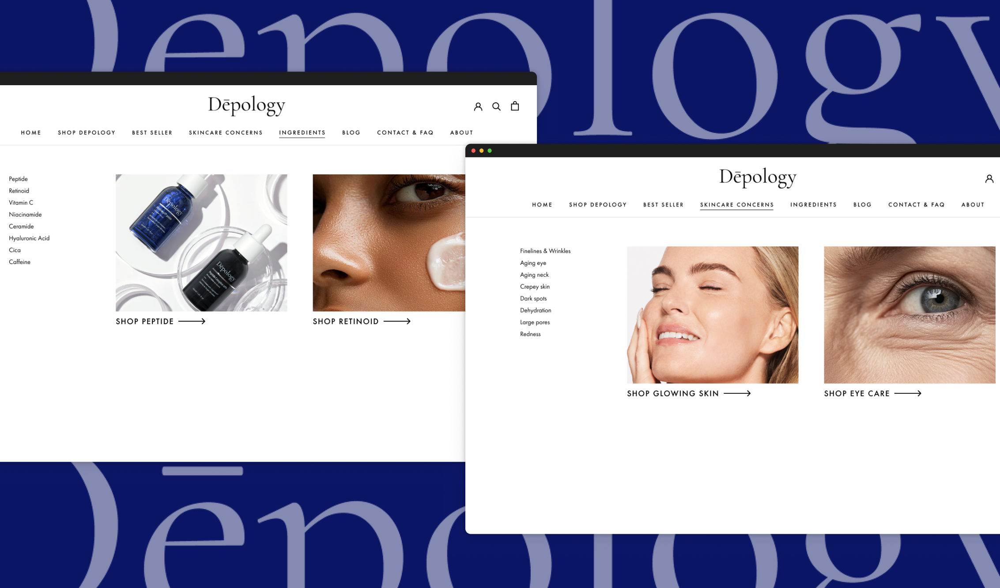
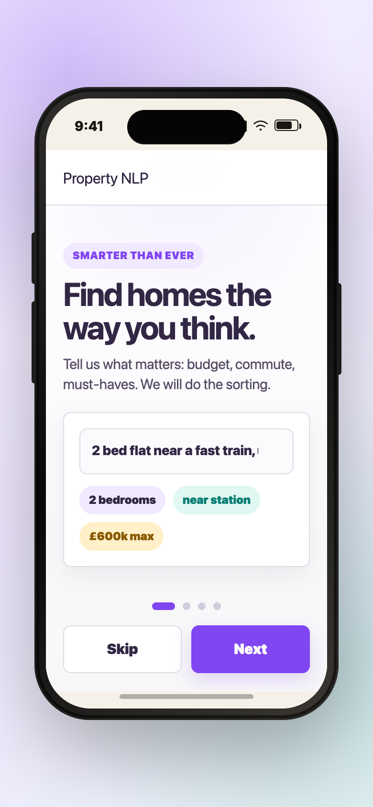
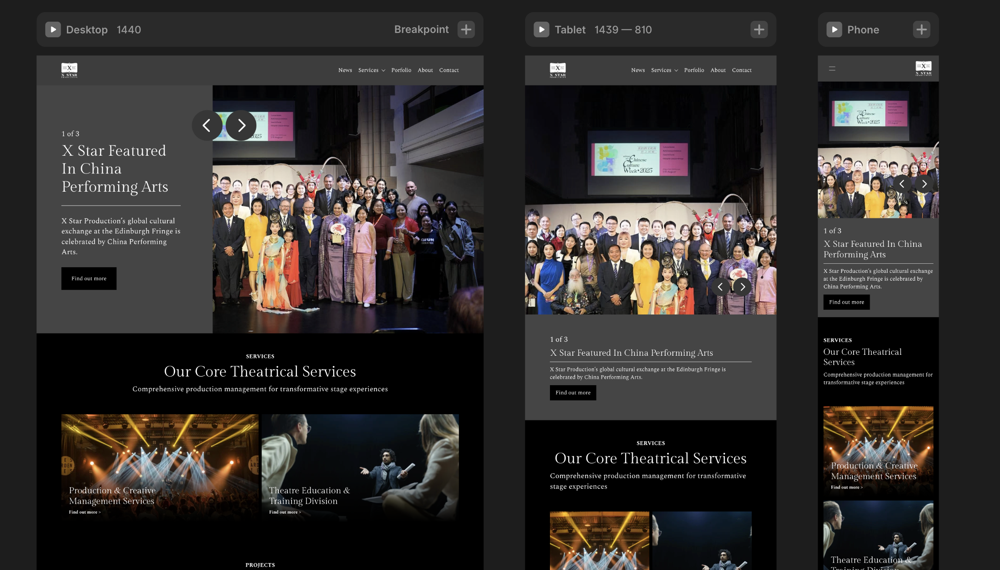
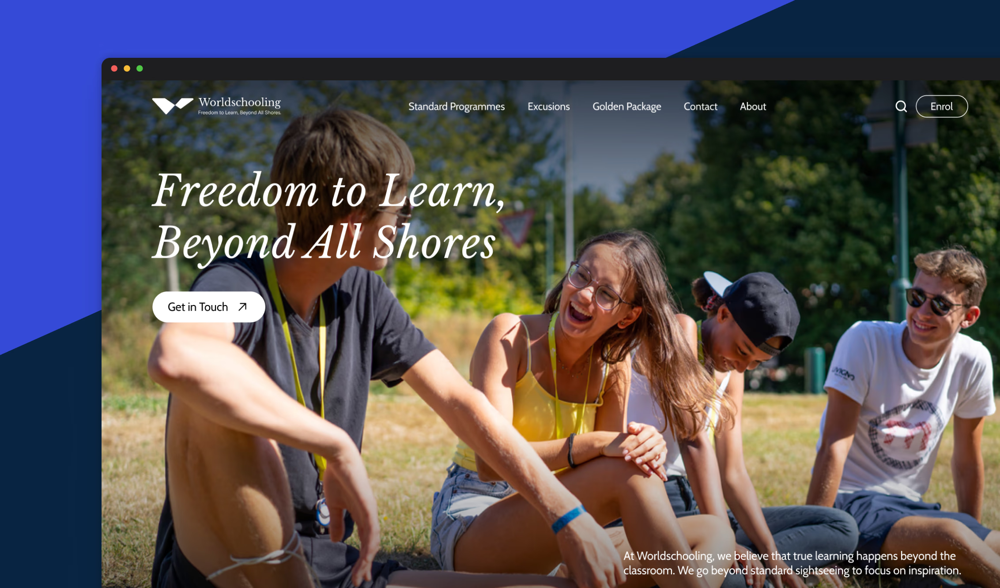
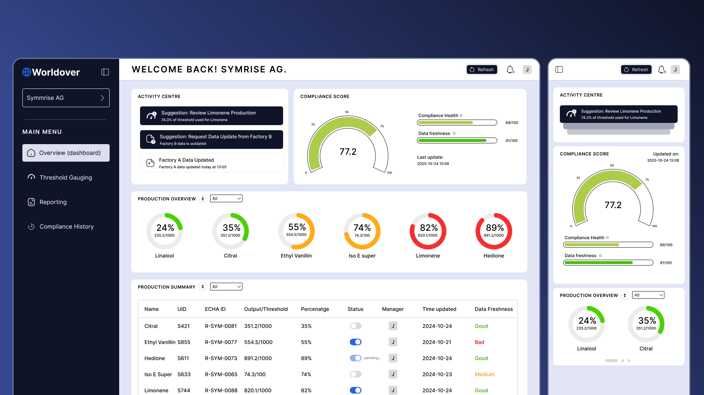
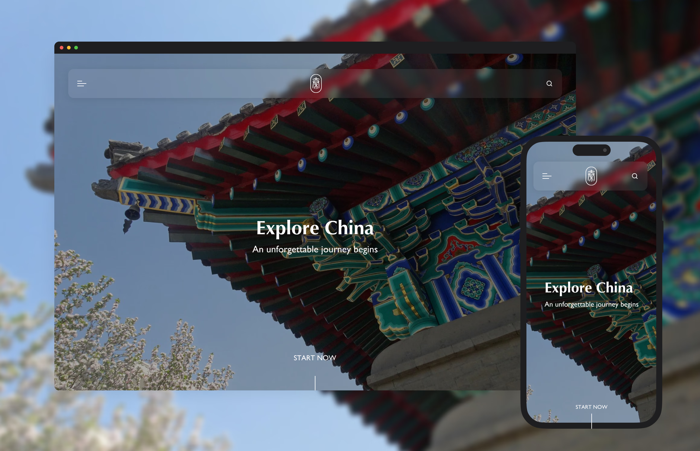
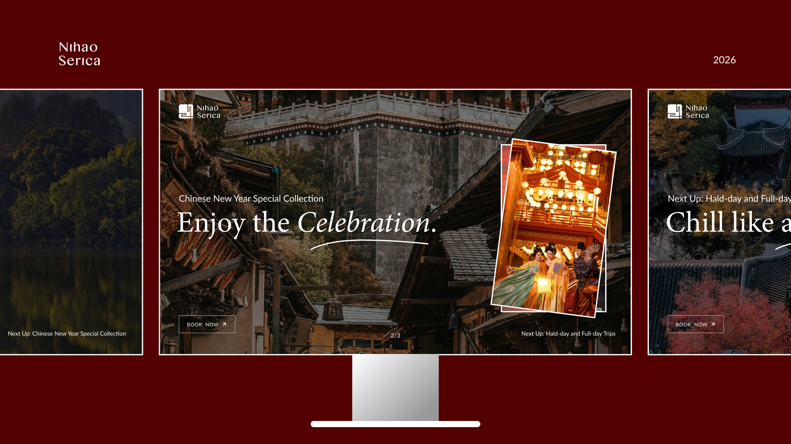
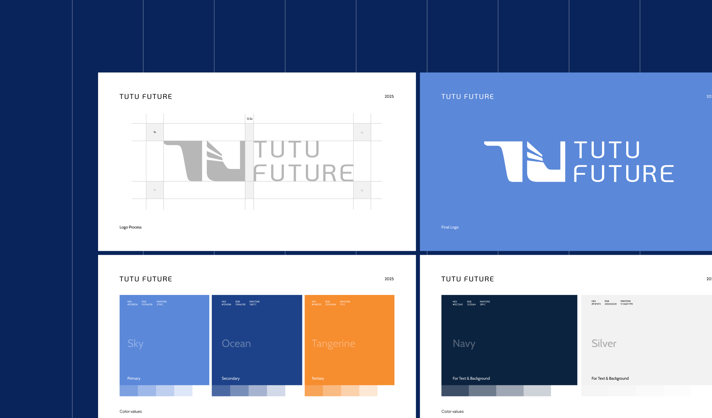
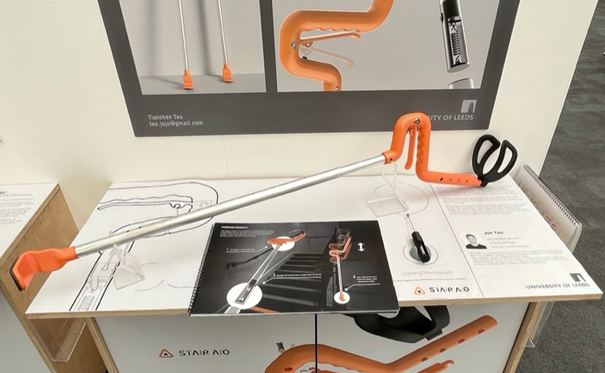

Dēpology Design System
Turning mobile commerce friction into reusable navigation, buybox, cart, checkout, and responsive product-page patterns.
Open projectProject archive
Use the filters to scan by the kind of evidence you need: conversion, AI search, dashboards, education journeys, service IA, brand systems, and product design.

Turning mobile commerce friction into reusable navigation, buybox, cart, checkout, and responsive product-page patterns.
Open project
A fast technical UX case study: wireframe, live demo, backend logic, revenue estimate, then the full narrative in five short sections.
Open project
A story-led theatrical platform built natively in Framer. Delivered from concept to live production in just two weeks.
Open project
A launch-ready education-travel platform that narrowed a large booking vision into programme comparison, eligibility checks, and deposit confidence.
Open project
A compliance command-centre case study turning threshold risk, entity scope, production evidence, alerts, and report blockers into one scannable decision workflow.
Open project
A Travel to Qin case study: rebuilding a China travel site so international visitors could understand itineraries, trust the agency, and enquire with confidence.
Open project
End-to-end framework delivery encompassing core user experience, digital identity, and structural GTM rollout.
Open project
a strategic rebrand for a Chinese study tour operator expanding beyond hiking trips into academic and cultural programs.
Open project
an assistive mobility device that enables faster, safer stair navigation for people with temporary lower-limb injuries.
Open project